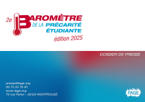
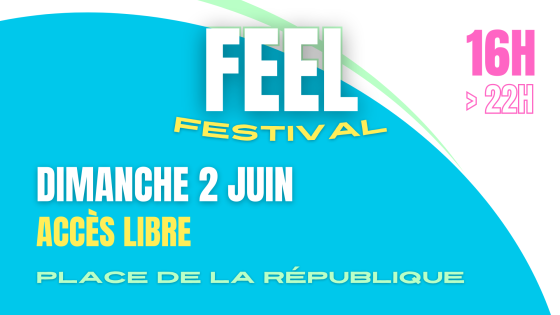
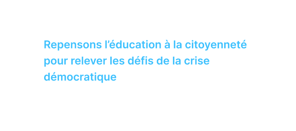

Votre portail unique pour les dernières nouvelles, les vidéos
captivantes, les communiqués de presse et les événements majeurs de
la FAGE. Ne manquez rien!
La FAGE vous donne rendez-vous à son 36ème Congrès National,
placé sous le thème : « Les associations au service de
l'intérêt général ». Chaque année, au mois de septembre, la
FAGE rassemble les esprits dynamiques et engagés de la
communauté étudiante pour cet événement incontournable.
Chaque été, la FAGE organise son Université d'été pour former
les étudiants engagés et préparer la rentrée universitaire.
Un moment unique de partage, de formation et d'échanges
autour des enjeux de l'enseignement supérieur.
Le Séminaire National rassemble les élus étudiants de toute
la France pour échanger sur les bonnes pratiques, se former
aux enjeux institutionnels et construire ensemble des
stratégies pour mieux représenter les étudiants.
Les Journées Nationales sont l'occasion pour les associations
membres de la FAGE de se rencontrer, d'échanger sur leurs
projets et de bénéficier de formations adaptées à leurs
besoins. Un temps fort du réseau associatif étudiant.
Les États Généraux sont un temps de réflexion collective
sur l'avenir de l'engagement étudiant. Pendant plusieurs
jours, des ateliers, des débats et des conférences permettent
de construire des propositions concrètes pour l'avenir.
Découvrez les dernières nouvelles et publications de la FAGE
Indicateur du coût de la rentrée étudiante 2025
Résultats des élections CNESER 2025
Etats Généraux engagement jeunes 2025

Baromètre de la précarité étudiante
Un arrondi en caisse pour des milliers de repas
Indicateur du coût de la rentrée étudiante 2024
20 ans après le 21 avril, étudiants mobilisés
Dégel des frais universitaires un nouveau coup de masse

FEEL Festival - 2 juin 2024

Repensons l'éducatio n à la citoyenneté
F.A.Q
Questions Fréquentes
Retrouvez les réponses aux questions les plus posées sur la FAGE et ses services
Qu'est-ce que la FAGE ?
La FAGE (Fédération des Associations Générales Étudiantes) est la première organisation étudiante de France. Elle représente et défend les droits des étudiants depuis plus de 30 ans.
Comment adhérer à la FAGE ?
L'adhésion se fait par l'intermédiaire d'une association membre. Renseignez-vous auprès de l'association étudiante de votre établissement ou contactez-nous directement.
Qu'est-ce qu'une AGORAÉ ?
Les AGORAÉ sont des épiceries solidaires étudiantes qui permettent aux étudiants en situation de précarité d'accéder à des produits alimentaires et d'hygiène à prix réduits.
Comment bénéficier des aides de la FAGE ?
Les aides (AGORAÉ, formations, accompagnements) sont accessibles via nos associations membres. Contactez l'association FAGE de votre ville ou région pour plus d'informations.
La FAGE organise-t-elle des événements ?
Oui ! Congrès National, Université d'été, FEEL Festival, séminaires et formations sont régulièrement organisés pour les étudiants engagés.
Comment créer une association étudiante ?
Réunir au moins 2 personnes, rédiger des statuts, déclarer en préfecture et publier au Journal Officiel. La FAGE propose un accompagnement pour ces démarches.
Quels services propose la FAGE ?
Formations associatives, accompagnement de projets, épiceries solidaires AGORAÉ, études sur la condition étudiante et représentation institutionnelle.
Tribunes sur l'enseignement supérieur, la recherche, la jeunesse et la société
21/10/2021Paul Mayaux, président de la FAGE
10 ans des AGORAé : un triste anniversaire à fêter
Le 19 octobre 2011, la FAGE inaugura la première épicerie sociale et solidaire à Lyon. Ce projet est l'expression de l'objectif premier de la FAGE et de son réseau : garantir l'égalité des chances et la réussite dans le système éducatif.
Dix ans plus tard, les AGORAé au modèle ambivalent d'épicerie et de lieu de vie subsistent fatalement face à cette précarité grandissante que l'on a laissé s'installer au fil des années.
Cette précarité finalement devenue misère pour une partie de la population estudiantine est bien souvent corrélée à un isolement social fort, et c'est en sa qualité de facilitatrice de liens sociaux que l'AGORAé se démarque du modèle d'aide alimentaire traditionnel.
Nous sommes fier·e·s de notre organisation et du long chemin qu'elle a déjà parcouru, nourrit par un engagement décisif de milliers de bénévoles qui agissent au quotidien au sein des fédérations et associations de l'ensemble du territoire.
28/10/2020Paul Mayaux, président de la FAGE
Discours en hommage à Samuel Paty
Discours prononcé par Paul Mayaux le 18 octobre 2020, Place de la République à Paris
Il y a maintenant deux jours, Samuel Paty, professeur d'histoire géographie et d'enseignement moral et civique a été tué avec une grande violence par un terroriste islamiste.
Lorsqu'un citoyen meurt en prônant la liberté d'expression, en défendant une de nos libertés les plus fondamentales, c'est la République tout entière qui est touchée en son cœur.
Instruit aux prémices de notre Constitution : «La France est une République indivisible, laïque, démocratique et sociale». Aujourd'hui plus que jamais, face à la montée de la haine, nous devons rester solidaires pour que l'obscurantisme et ses répercussions, ces poisons n'aient plus leurs places au sein de notre société.
08/01/2020Paul Mayaux, président de la FAGE
Nouvelle année, nouvelle décennie: l'heure est à l'ambition!
L'année 2020, le début de cette nouvelle décennie s'ouvre dans un contexte politique et social empreint d'une profonde méfiance. Pour cause, notre modèle génère toujours plus d'inégalités et d'injustices, tout en mettant en péril la vie sur terre.
La réalité est la suivante : la France reste l'un des pays avec le système éducatif reflétant le plus les inégalités sociales. À ces inégalités, certain répondent par cette théorie du mérite, du «quand on veut, on peut».
De fait, les chiffres de la dernière enquête de l'Observatoire de la Vie Etudiante sont parlants : 20% des étudiants ont présenté des signes de détresse psychologique, et 37% ont montré un signe d'épisode dépressif.
Les jeunes en études initiales ne sont pas logés à meilleure enseigne : le modèle d'aides sociales étudiants n'est plus le bon. Ce système de bourses qu'on a tenté de soigner depuis de nombreuses années n'est plus adapté. L'ambition doit être au rendez-vous.
Titre de l'actualité
📞 Contact Presse FAGE
Elisa Mangeolle
Vice-Présidente chargée de la Stratégie de Communication et des Relations presse